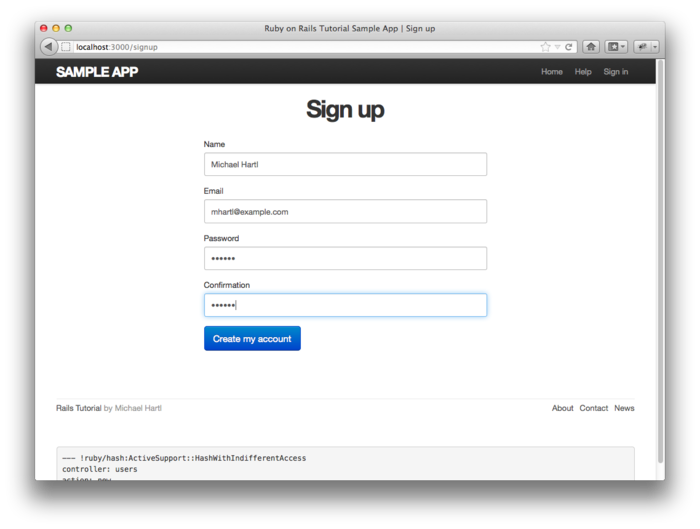
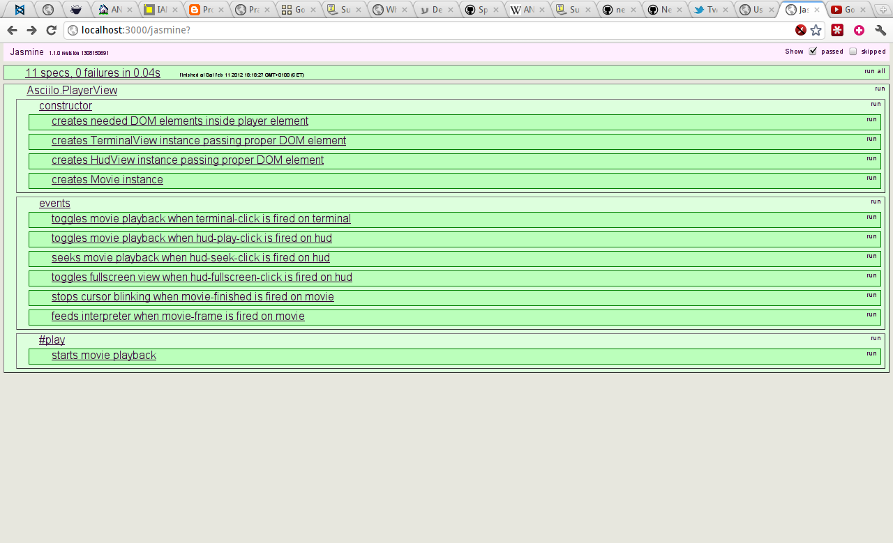
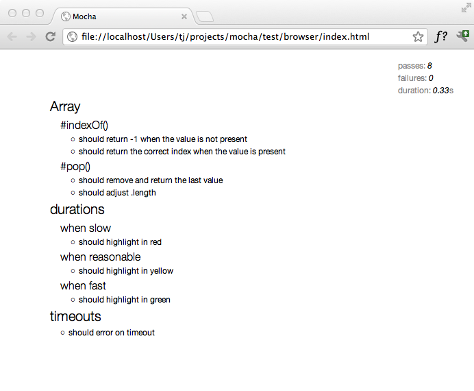
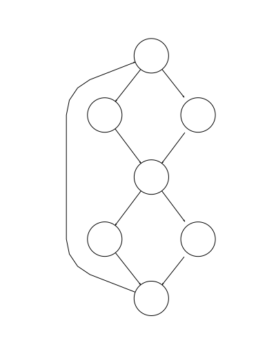
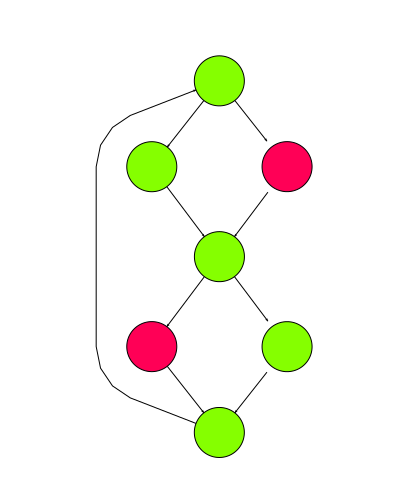
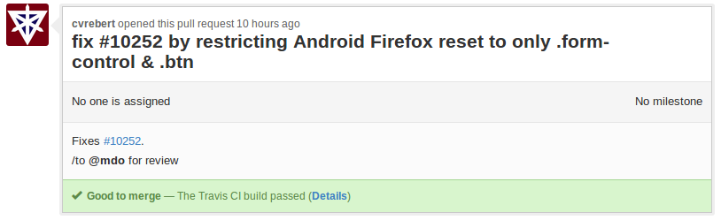

Testing JavaScript Applications
by Alexander Gerasimov and Dmitrey Gerasimov
¿Por qué?
¡Porque!
- refactoring
- organization, modularization, extensibility
- documentation
- defect prevention
- collaboration
"Any feature without a test doesn’t exist"
TDD
Test-driven development
Tests first
red/green/refactor
Red: Write a failing test
red/green/refactor
Green: Make it pass
red/green/refactor
Refactor: Eliminate redundancy
Structure
- Setup: Put the Unit Under Test (UUT) or the overall test system in the state needed to run the test.
- Execution: Trigger/drive the UUT to perform the target behavior and capture all output, such as return values and output parameters.
- Validation: Ensure the results of the test are correct.
- Cleanup: Restore the UUT or the overall test system to the pre-test state.
BDD
Behavior-driven development
BDD
"Delivering software that matters"
- Where to start in the process?
- What to test and what not to test?
- How much to test in one go?
- What to call the tests?
- How to understand why a test fails?
BDD
"From the heavens to the depths">
User story: As a [role] I want [feature] so that [benefit]. Acceptance criteria: Given [initial context]. When [event occurs]. Then [ensure some outcomes].
given-when-then
Story: Returns go to stock In order to keep track of stock As a store owner I want to add items back to stock when they're returned Scenario 1: Refunded items should be returned to stock Given a customer previously bought a black sweater from me And I currently have three black sweaters left in stock When he returns the sweater for a refund Then I should have four black sweaters in stock
Cucumber
Feature: Addition In order to avoid silly mistakes As a math idiot I want to be told the sum of two number Scenario: Add two numbers Given I have entered 50 into the calculator And I have entered 70 into the calculator When I press add Then the result should be 120 on the screen
Cucumber
Given /I have entered (.*) into the calculator do
calculator = Calculator.new;
calculator.push(n.to_i);
end
Functional testing
UX/behavior verification
Unit tests just prove that your code doesn't work
Automation & Control
Metrics & Profiling
- Execution time
- Loading, rendering, painting
- CPU & Memory
- Google Chrome Metrics
Helps QA testers
Why not let QA guys concentrate on quality rather than routine?
Techniques
Dummies
Stubs
Mocks
Spies
Fixtures
Tests
Make code life better.
Our sponsors for today
- Jasmine
- Mocha ['mɔkə]
- Chai
- Sinon
Suites & Specs
Not suits
// Suite
describe("<unit or class name here>", function() {
// Some variables and hooks* for test suite
describe("#<method or test item name here>", function() {
// Spec (your test)
it("<behavior and result here>", function() {
/*
Initalization
Actions
Assertion
*/
});
});
});common test
describe('Array', function(){
describe('#indexOf()', function(){
it('should return -1 when the value is not present', function(){
[1,2,3].indexOf(5).should.equal(-1);
})
})
})Assertions
What? Where? How many?
assert
Classic
var assert = chai.assert;
assert.typeOf(foo, 'string');
assert.equal(foo, 'bar');
assert.lengthOf(foo, 3)
assert.property(tea, 'flavors');
assert.lengthOf(tea.flavors, 3);expect
BDD like
var expect = chai.expect;
expect(foo).to.be.a('string');
expect(foo).to.equal('bar');
expect(foo).to.have.length(3);
expect(tea).to.have.property('flavors').with.length(3);should
more BDD
chai.should();
foo.should.be.a('string');
foo.should.equal('bar');
foo.should.have.length(3);
tea.should.have.property('flavors').with.length(3);Hooks
before(), after(), beforeEach(), afterEach()
beforeEach(function(done){
db.clear(function(err){
if (err) return done(err);
db.save([tobi, loki, jane], done);
});
})Jasmine
What is it?..
Jasmine
Matchers
expect(x).toEqual(y);
expect(x).toBe(y);
expect(x).toMatch(pattern);
expect(x).toBeDefined();
expect(x).toBeUndefined();
expect(x).toBeNull();
expect(x).toBeTruthy();
expect(x).toBeFalsy();
expect(x).toContain(y);
expect(x).toBeLessThan(y);
expect(x).toBeGreaterThan(y);
expect(function(){fn();}).toThrow(e);Jasmine
Spies
spyOn(obj, 'method');
expect(obj.method).toHaveBeenCalled();
expect(obj.method).toHaveBeenCalledWith('foo', 'bar')
obj.method.callCount
obj.method.mostRecentCall.args
obj.method.reset()
spyOn(obj, 'method').andCallThrough()
obj.method.argsForCall
spyOn(obj, 'method').andReturn('Pow!')Jasmine
Any
describe("jasmine.any", function() {
it("matches any value", function() {
expect({}).toEqual(jasmine.any(Object));
expect(12).toEqual(jasmine.any(Number));
});
});Jasmine
Clock
beforeEach(function() {
timerCallback = jasmine.createSpy("timerCallback"); //create spy
jasmine.Clock.useMock(); //use wrapper of system timer
});
it("causes a timeout to be called synchronously", function() {
setTimeout(function() {
timerCallback();
}, 100);
expect(timerCallback).not.toHaveBeenCalled();
jasmine.Clock.tick(101); //make time go
expect(timerCallback).toHaveBeenCalled();
});Jasmine
Reporter
describe("Jasmine", function() {
it("makes testing JavaScript awesome!", function() {
expect (yourCode).toBeLotsBetter();
});
});
Mocha
['mɔkə]
Mocha
- Supports TDD assertions and BDD should/expect
- Reporting & CI integration
- JavaScript API
- Browser Test Runner
Mocha
syntax
describe('Array', function(){
describe('#indexOf()', function(){
it('should return -1 when the value is not present', function(){
[1,2,3].indexOf(0).should.equal(-1);
})
})
})
Mocha
async
describe('User', function(){
describe('#save()', function(){
it('should save without error', function(done){
var user = new User('Luna');
user.save(function(err){
if (err) throw err;
done();
});
})
})
})
Mocha
Hooks: before(), after(), beforeEach(), afterEach()
beforeEach(function(done){
db.clear(function(err){
if (err) return done(err);
db.save([tobi, loki, jane], done);
});
})Mocha

Mocha
Console reporter

Mocha
HTML reporter
Mocha
Nyan reporter

Chai
Chai
Assert, expect/should
chai.should();
foo.should.be.a('string');
foo.should.equal('bar');
foo.should.have.length(3);
tea.should.have.property('flavors').with.length(3);Question Time!
How would you test an RNG?
Chai
Plugins
hereSinon.js
Standalone test spies, stubs and mocks for JavaScript.
No dependencies, works with any unit testing framework.
Sinon.js
Spies
it("calls original function with right this and args", function () {
var callback = sinon.spy();
var proxy = once(callback);
var obj = {};
proxy.call(obj, 1, 2, 3);
assert(callback.calledOn(obj));
assert(callback.calledWith(1, 2, 3));
});Sinon.js
Stubs
it("returns the value from the original function", function () {
var callback = sinon.stub().returns(42);
var proxy = once(callback);
assert.equals(proxy(), 42);
});Sinon.js
Testing ajax
function getTodos(listId, callback) {
jQuery.ajax({
url: "/todo/" + listId + "/items",
success: function (data) {
// Node-style CPS: callback(err, data)
callback(null, data);
}
});
}Sinon.js
Testing ajax
after(function () {
// When the test either fails or passes, restore the original
// jQuery ajax function (Sinon.JS also provides tools to help
// test frameworks automate clean-up like this)
jQuery.ajax.restore();
});
it("makes a GET request for todo items", function () {
sinon.stub(jQuery, "ajax");
getTodos(42, sinon.spy());
assert(jQuery.ajax.calledWithMatch({ url: "/todo/42/items" }));
});Sinon.js
Fake XMLHttpRequest
var xhr, requests;
before(function () {
xhr = sinon.useFakeXMLHttpRequest();
requests = [];
xhr.onCreate = function (req) { requests.push(req); };
});
after(function () {
// Like before we must clean up when tampering with globals.
xhr.restore();
});
it("makes a GET request for todo items", function () {
getTodos(42, sinon.spy());
assert.equals(requests.length, 1);
assert.match(requests[0].url, "/todo/42/items");
});Sinon.js
Fake server
var server;
before(function () { server = sinon.fakeServer.create(); });
after(function () { server.restore(); });
it("calls callback with deserialized data", function () {
var callback = sinon.spy();
getTodos(42, callback);
// This is part of the FakeXMLHttpRequest API
server.requests[0].respond(
200,
{ "Content-Type": "application/json" },
JSON.stringify([{ id: 1, text: "Provide examples", done: true }])
);
assert(callback.calledOnce);
});Sinon.js
Fake time
function throttle(callback) {
var timer;
return function () {
var args = [].slice.call(arguments);
clearTimeout(timer);
timer = setTimeout(function () {
callback.apply(this, args);
}, 100);
};
}Sinon.js
Fake time
var clock;
before(function () { clock = sinon.useFakeTimers(); });
after(function () { clock.restore(); });
it("calls callback after 100ms", function () {
var callback = sinon.spy();
var throttled = throttle(callback);
throttled();
clock.tick(99);
assert(callback.notCalled);
clock.tick(1);
assert(callback.calledOnce);
}CasperJS
CasperJS
var casper = require('casper').create();
casper.start('http://domain.tld/page.html', function() {
if (this.exists('h1.page-title')) {
this.echo('the heading exists');
}
});
casper.run();Question Time!
What happens if not everyone on the team adopts TDD/BDD?
Code Coverage
Instrumentation
Instrumentation
Istanbul
- Statement, branch, and function coverage
- Test running tools
- HTML & LCOV reporting
- esprima-based
Testing + CI = ❤
- fail builds
- statistics & reporting
- Github is integration paradise
Github is integration paradise
IRL, 100% coverage is a lie
- legacy & untestable code
- permissive tests
- not applicable to functional testing
Mutation testing
- Who tests tests?
- Coverage is paramount! (it isn't)
- Mutations: remove lines, alter operators, rename identifiers
- The Future of Unit Testing
Question Time!
What do you do when you're offerred a project without TDD?